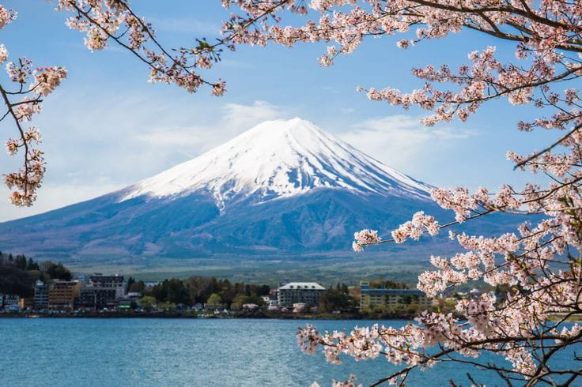

Gunung Fuji

Gunung Fuji adalah gunung berapi aktif yang terletak di pulau Honshu, Jepang. Gunung ini merupakan gunung tertinggi di Jepang dengan ketinggian 3.776,24 meter (12.389 kaki). Gunung Fuji terletak di perbatasan prefektur Shizuoka dan Yamanashi.
Gunung Fuji adalah simbol nasional Jepang dan telah digambarkan dalam seni dan budaya Jepang selama berabad-abad. Gunung ini juga menjadi tujuan wisata populer, dengan ribuan pendaki setiap tahunnya. Letusan Gunung Fuji terakhir terjadi pada tahun 1707-1708. Gunung ini memiliki kawah di puncaknya dengan lebar sekitar 8 km (5 mil) dan kedalaman 2 km (1,2 mil). Gunung Fuji adalah gunung berapi aktif namun para ahli mengatakan kemungkinan meletusnya sangat rendah.